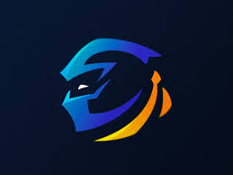

De quoi parle ce blog?
Ce blog est la création d'un fan de Gaming qui veut crée sa propre communauté de fan des jeux videosCe blog est spécialisé dans
- le Gaming
- l'Actualité sur le Gaming
- le teste et critique des nouveaux jeux sortie
- la Notation des nouveaux jeux apres teste 